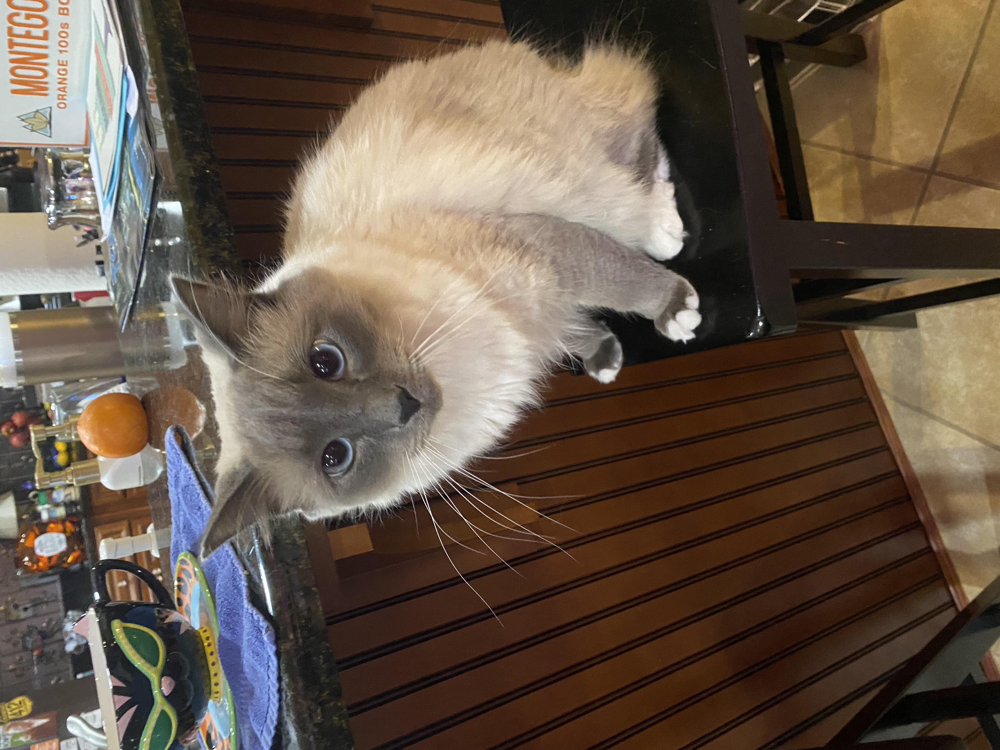

digital resume
John Frye's Digital Resume
Mississippi State University, Bachelors of Science in Computer Engineering (2020-2025)
Skills:
- Microcontrollers (TI, NXP, PIC)
- C, C++, Assembly (ARM), and Python
- Oscilloscopes and digital analyzers
- Serial Protocols (I2C, SPI, UART) and peripheral drivers
Garmin International
Embedded Software Engineering Intern (May 2024 - August 2024)
- Developed a binary search algorithm to locate ALS sensor coordinates for calibration on AMOLED watch displays.
- Improved user experience by increasing Garmin logo display time during boot by 30x, and modified SPI driver to support single-threaded operations.
- Migrated translation data storage from SNAND to SFLASH, providing more space and enabling direct memory access.
- Enhanced BQ27427 fuel gauge by implementing power-loss detection and preserving learned parameters in non-volatile memory, ensuring long-term battery accuracy.
- Consolidated bundled-update logic from three separate repositories into a shared submodule, enabling activation/deactivation while maintaining original project functionality.
Leidos
Electrical Engineering Intern (May 2023 - August 2023)
- Designed and implemented drivers for EEPROMs, switch matrices, and LEDs.
- Created an automated test environment that integrated a microcontroller with GPIO expanders and switch matrices.
- Improved flexibility of automated test benches by designing a Python utility that enabled parameter configuration and output control of oscilloscopes and signal generators via SCPI.
- Streamlined testing process and ensured device calibration compliance requirements by designing a Python script to extract device serial numbers and determine calibration status.
Adtran Inc.
Embedded Software Engineering Co-Op (January 2023 - May 2023)
- Successfully implemented a state machine to reset a switch chip, handling a new PCIE reset pin and ensuring precise timing sequencing.
- Developed a new driver for a replacement chip (SN74LV) to control LEDs, creating a hardware abstraction layer for simplified input and communication via SSI.
- Contributed to the redesign of the kernel driver, demonstrating the feasibility of implementing frontend and backend modules for communication with TiVA over USB to create virtual I2C devices.
- Demonstrated proficiency in various tasks, including clock chip configuration, temperature monitoring, fan speed monitoring, power supply status reporting, telemetry data retrieval, and bug fixing.
Adtran Inc.
Software Engineering Co-Op (May 2022 - August 2022)
- Developed numerous on-target and off-target solutions utilizing object-oriented programming principles for traffic management software packages in C++ for present and future generation OLTs.
- Created CI pipeline tests to verify software designs using reStructuredText/ROBOT for traffic rate limiting and new hashing algorithms.
- Designed and implemented Python scripts for automation purposes within the codebase.
Mercedes-Benz United States International
Electrical Engineering Intern (August 2021 - December 2021)
- Designed a CAN verification device that reads/sends CAN messages compatible with multiple control units and diagnostic equipment using Arduino, AutoCAD, and SolidWorks.
- Developed a PowerShell script to search test sequences from traces, computing and outputting start, end, and overall test times to a spreadsheet for analysis across various vehicles at different testing locations.
- Designed a PowerShell script to trim 24-hour logs of test times into specified intervals for easy analysis of vehicles across various shifts and locations throughout the day.
